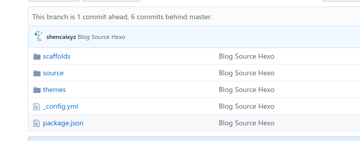

hexo+github多端同步
刚刚用Github+Hexo搭建了自己的博客，接下来要解决多端同步的问题
主体的思路是将博文内容相关文件放在Github项目中master中，将Hexo配置写博客用的相关文件放在Github项目的hexo分支上，这个是关键，多终端的同步只需要对分支hexo进行操作。下面是详细的步骤讲解：
1. 在其中一个终端操作，push本地文件夹Hexo中的必要文件到yourname.github.io的hexo分支上
在利用Github+Hexo搭建自己的博客时，新建了一个Hexo的文件夹，并进行相关的配置，这部分主要是将这些配置的文件托管到Github项目的分支上，其中只托管部分用于多终端的同步的文件，如完成的效果图所示：1
2
3
4
5
6
7git init //初始化本地仓库
git add source //将必要的文件依次添加，有些文件夹如npm install产生的node_modules由于路径过长不好处理，所以这里没有用`git add .`命令了，而是依次添加必要文件，如下图所示
git commit -m "Blog Source Hexo"
git branch hexo //新建hexo分支
git checkout hexo //切换到hexo分支上
git remote add origin git@github.com:yourname/yourname.github.io.git //将本地与Github项目对接
git push origin hexo //push到Github项目的hexo分支上
完成之后的效果图为

这样你的github项目中就会多出一个Hexo分支，这个就是用于多终端同步关键的部分。
2.另一终端完成clone和push更新
此时在另一终端更新博客，只需要将Github的hexo分支clone下来，进行初次的相关配置
1 | git clone -b hexo git@github.com:yourname/yourname.github.io.git //将Github中hexo分支clone到本地 |
3.不同终端间愉快地玩耍
在不同的终端已经做完配置，就可以愉快的分享自己更新的博客
进入自己相应的文件夹1
2
3
4
5
6git pull origin hexo //先pull完成本地与远端的融合
hexo new post " new blog name"
git add source
git commit -m "XX"
git push origin hexo
hexo d -g